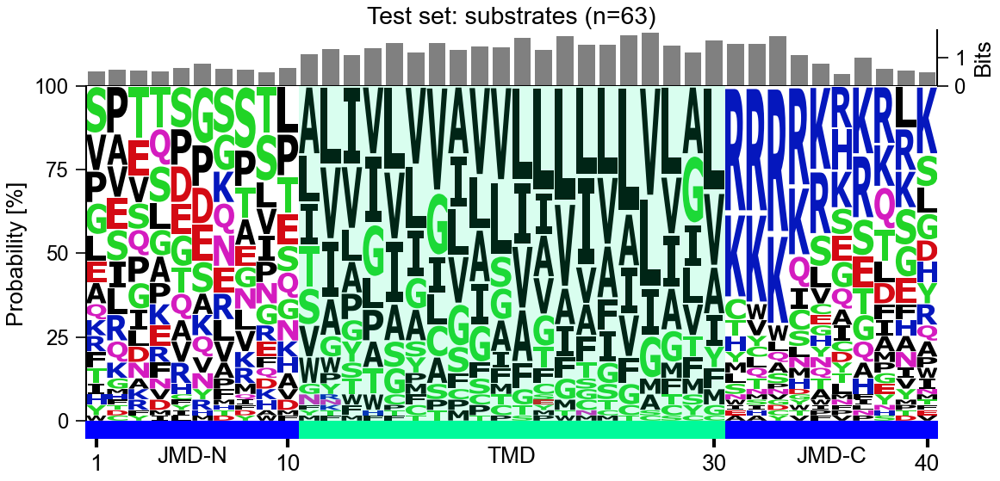
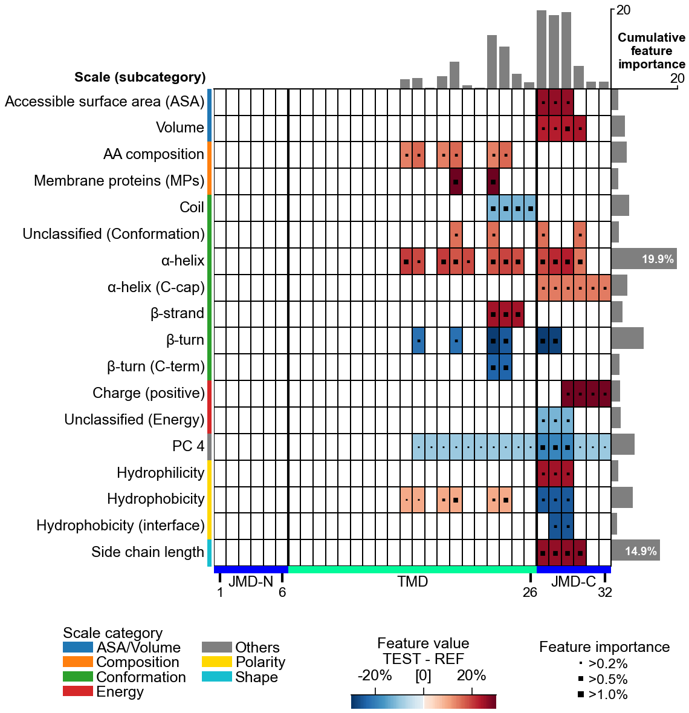
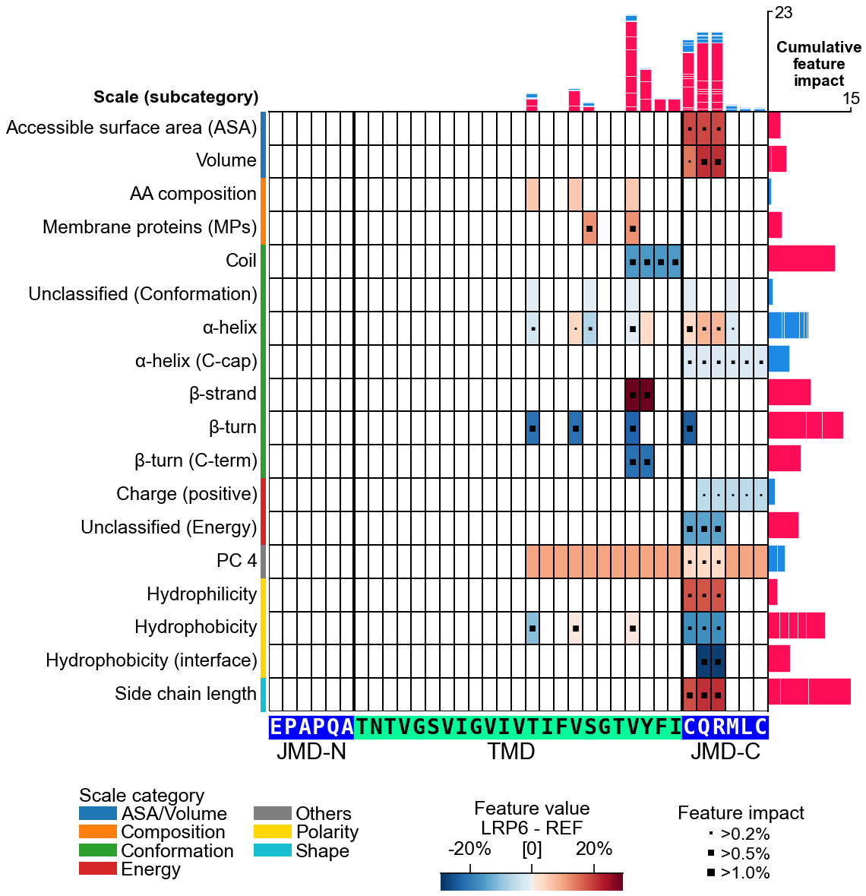
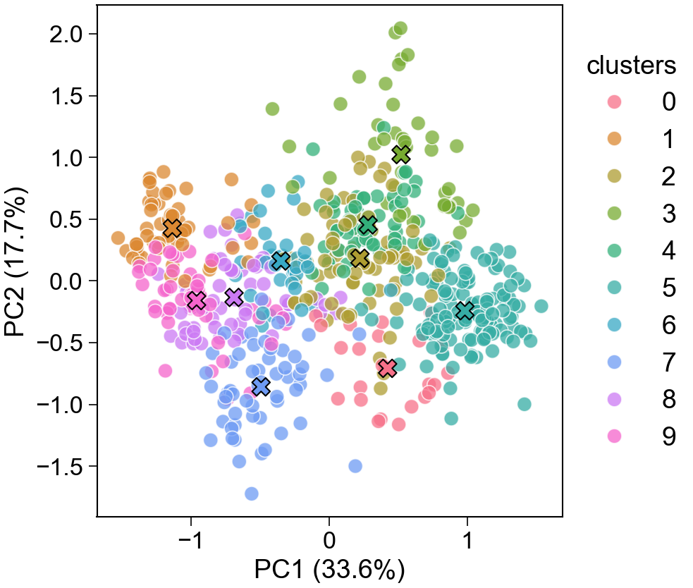
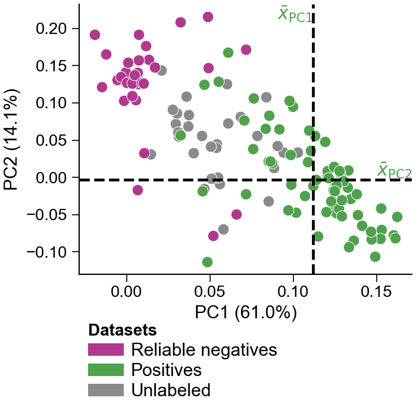

| TMD | Target Middle Domain — the central segment of interest (e.g. transmembrane stretch, binding region). |
| JMD | Juxta Middle Domain — the flanks adjoining the TMD (jmd_n on the N-side, jmd_c on the C-side). |
skw = sf.get_split_kws(
split_types="Segment",
n_split_min=1, n_split_max=1)
cpp = aa.CPP(df_parts=df_parts,
split_kws=skw)
skw = sf.get_split_kws(
split_types=["Segment", "Pattern",
"PeriodicPattern"],
n_split_max=5, steps_pattern=[3, 4],
steps_periodicpattern=[3, 4])
cpp = aa.CPP(df_parts=df_parts,
split_kws=skw)
# Python >= 3.11 pip install aaanalysis # core pip install 'aaanalysis[pro]' # SHAP, FIMO, Bio import numpy as np import matplotlib.pyplot as plt import aaanalysis as aa df_seq = aa.load_dataset(name='DOM_GSEC') # γ-secretase labels = df_seq['label'].to_list() df_scales = aa.load_scales() # TMD model: 20-aa TMD, short JMD flanks aa.options['jmd_n_len'] = 6 aa.options['jmd_c_len'] = 6
sf = aa.SequenceFeature() df_parts = sf.get_df_parts(df_seq=df_seq, list_parts=['tmd', 'jmd_n', 'jmd_c']) aa.plot_settings(font_scale=0.7) # aal_kws builds df_logo + bits bar for you aa.AAlogoPlot().single_logo( aal_kws=dict(df_parts=df_parts, labels=labels, label_test=1, tmd_len=20), name_data='Test set: substrates') plt.tight_layout(); plt.show()

# extended parts -> default split grid applies df_parts = sf.get_df_parts(df_seq=df_seq, list_parts=['tmd', 'jmd_n_tmd_n', 'tmd_c_jmd_c']) cpp = aa.CPP(df_parts=df_parts, df_scales=df_scales) df_feat = cpp.run(labels=labels, n_filter=40) # swap scales for more interpretable correlated ones df_feat = cpp.simplify(df_feat=df_feat, labels=labels) X = sf.feature_matrix(features=df_feat['feature'], df_parts=df_parts) tm = aa.TreeModel(); tm.fit(X, labels=labels) df_feat = tm.add_feat_importance(df_feat=df_feat) cpp_plot = aa.CPPPlot() aa.plot_settings(font_scale=0.65) cpp_plot.feature_map(df_feat=df_feat) plt.tight_layout(); plt.show()

se = aa.ShapModel() # fuzzy_labeling captures the true SHAP impact se.fit(X, labels=labels, fuzzy_labeling=True) # explain a borderline call — LRP6 (~60% substrate) i = list(df_seq['entry']).index('O75581') df_feat = se.add_feat_impact(df_feat=df_feat, sample_positions=i, names='LRP6') cpp_plot.feature_map(df_feat=df_feat, shap_plot=True, col_imp='feat_impact_LRP6', name_test='LRP6', **args_seq) plt.tight_layout(); plt.show()

X = np.array(df_scales).T aac = aa.AAclust() aac.fit(X, names=list(df_scales), n_clusters=10) aac.medoid_names_ # redundancy-reduced scales aac_plot = aa.AAclustPlot() aac_plot.centers(X, labels=aac.labels_) plt.tight_layout(); plt.show()

# labels: 1 = positive, 2 = unlabelled dpul = aa.dPULearn() dpul.fit(X=X, labels=labels, n_unl_to_neg=n_pos) df_pu = dpul.df_pu_ # 1 pos · 0 rel-neg · 2 unl dpul_plot = aa.dPULearnPlot() dpul_plot.pca(df_pu=df_pu, labels=labels) plt.tight_layout(); plt.show()

import matplotlib.pyplot as plt import aaanalysis as aa df_seq = aa.load_dataset(name='DOM_GSEC') labels = df_seq['label'].to_list() sf = aa.SequenceFeature() df_parts = sf.get_df_parts(df_seq=df_seq) cpp = aa.CPP(df_parts=df_parts) df_feat = cpp.run(labels=labels) X = sf.feature_matrix(features=df_feat['feature'], df_parts=df_parts) tm = aa.TreeModel(); tm.fit(X, labels=labels) df_feat = tm.add_feat_importance(df_feat=df_feat) cpp_plot = aa.CPPPlot() aa.plot_settings() cpp_plot.feature_map(df_feat=df_feat) plt.tight_layout(); plt.show()
aa.options['random_state'] = 42 aa.options['verbose'] = True aa.options['allow_multiprocessing'] = True # TMD model — JMD flank widths aa.options['jmd_n_len'] = 10 aa.options['jmd_c_len'] = 10 # plot labels & system-level scales aa.options['name_tmd'] = 'TMD' aa.options['df_scales'] = my_scales
| CPP | CPPPlot | |
| AAclust | AAclustPlot | Wrapper |
| AAlogo | AAlogoPlot | |
| dPULearn | dPULearnPlot | Wrapper |
| TreeModel | — | Wrapper |
| ShapModel [pro] | — | Wrapper |
| AAMut | AAMutPlot | planned |
| SeqMut | SeqMutPlot | planned |
| AAWindowSampler | — | |
| SequenceFeature | — | |
| NumericalFeature | — | |
| SequencePreprocessor | — |